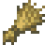
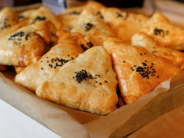
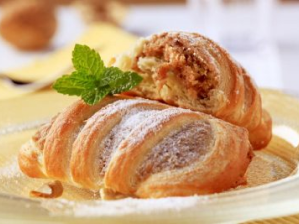
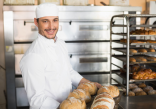
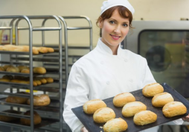
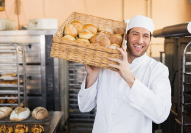

Настоящая домашняя выпечка

Домашняя выпечка – это замечательный повод для того, чтобы собраться семьей за одним столом и провести вечер в уютной и теплой атмосфере. На этом сайте вы можете заказать крендели, пироги, свежий хлеб, торты и забрать свой заказ в нашем магазинчике. Все изделия, представленные в наших пекарнях – это работа целой команды профессионалов, работающих для того, чтобы вам было вкусно! У нас заказывают выпечку, торты и свадебные караваи: для дней рождений, свадеб и других мероприятий для корпоративных обедов и праздников чтобы просто полакомиться и побаловать семью вкусненьким
Качество во всём

Натуральная продукция
Порадуйте себя ароматной домашней выпечкой и тортами ручной работы из натуральных ингредиентов. Готовим из качественных продуктов без усилителей вкуса и консервантов. Творог, сливки, сметана — всё свежее и натуральное.

Народные рецепты
Все рецепты продумывают и реализовывают пекари с большим опытом с любовью. Делаем так, чтобы каждый кусочек таял во рту.

Множество вкусов
Хлеба, пироги, аппетитные слойки и булочки, пирожки, вкусные напитки и добрые улыбки – все это вы встретите в каждой из наших пекарен.
Наши сотрудники

Станистав Алебро
Пекарь

Елена Головач
Пекарь

Валерий Жмышенко
Пекарь